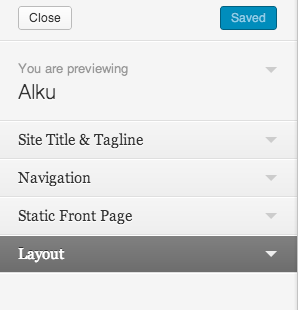
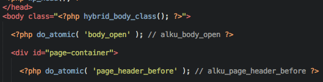
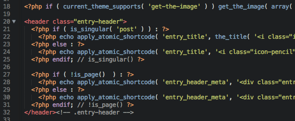
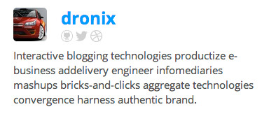
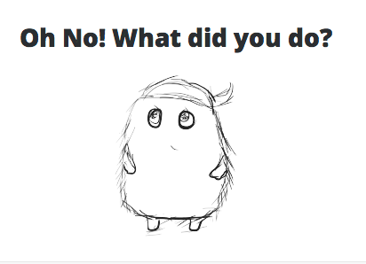

Hello! Thank for trying out Alku. Alku supports all the available WordPress post formats. The responsive layout supports up to two columns.
Alku was developed by Danny Ramirez using Hybrid Core which is a WordPress theme framework developed by Justin Tadlock.

Alku comes with some standard customization options. These options are limited and should be used for simple things such as selecting the default layout, the primary navigation, choosing a custom homepage, etc. If you would like to customize Alku any further than please do so by creating a child theme.

Thanks to Hybrid Core, Alku is able to provide contextual action hooks. These hooks are distribute throught the theme and can mostly be found in different page templates. They contextual hooks are prefixed with the name of the theme and the page currently being viewed. An example of a normal hook would be body_open. Depending on what page the user is on, additional action hooks are created. Sticking to our example body_open, the following hooks are created:
alku_open_bodyalku_singular_open_bodyalku_singular_post_open_bodyalku_singular_post_{ID}_open_bodyHere's a list of all the action hooks created by the Alku theme. Note that Hybrid Core, the framework in which this theme is built upon, provides with additional hooks of it own.
All of these will be listed in it's simplest form.
open_body - takes place right after the opening <body> tag and before #page-container.page_header_before - takes place after the opening #page-container div and before #page-header.page_header_after - takes place right after the closing tag of #page-header.content_before - takes place before the opening #content div.main_before - takes places after the opening #content div and before the section #main.entry_before - takes place before the opening article tag .hentry.entry_after - takes place after the article tag .hentry.
Alku also creates a few filter hooks that you can use to modify the theme. Most of these do not provide any paramaters and can be simply overwritten in your child theme.
entry_title - outputs the h1.entry-titleentry_header_meta - outputs the div.entry-header-meta which contains post's author, the category, comments link, and the edit link.aside_meta - outputs the meta information for the aside post-format which only includes an edit link.entry_more_link - outputs a Continue Reading link only used by the standard formats and archive pages.entry_footer_meta - outputs the entry's or post's footer meta which only contains the tags.author_info - outputs information regarding the current post author.gallery_slider - outputs the gallery slider.
There are a few custom shortcodes that you can use. Most of these are only to be used within the Loop.
comment-publised - overwrites Hybrid Core's comment-published to output when a comment was created, wrapped in a <time tag.hc-link - displays a link back to Hybrid Core. This is using the footer of the Alku theme.author-info - displays a div containing information regarding the author of a post. Alku creates three exta fields in the Profile page, in the back end of WordPress, Github, Twitter and Dribbble. If any of this fields are empty the front end will display a link to the homepage of each respective networking service.gallery-slider - displays slider using a post's attached gallery.
Alku's 404 page will look for a 404.png image file inside of your child theme's images folder. The path should look as follows: wp-content/child-theme/images/404.png. If it doesn't find the 404.png file then it will display its default 404 error image.
The Alku WordPress theme is released under the terms of the WTFPL license. A copy of the license can be found inside of the docs/license.txt file.
Alku made use of the following tools and code.